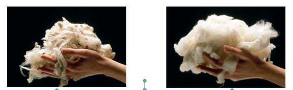

TEMATIKA 1: MATERIALET DHE PËRPUNIMI I TYRE3. Dita dhe lulja e veçantë
Lexo dhe mëso
Leshi i deles dhe pambuku i lules së pambukut që këputi Dita, përpunohen dhe përdoren për të bërë shumë gjëra. Ato mund të kthehen në fije peri për të punuar veshmbathje. Përdoren edhe si mbushje apo në forma të tjera. Në mungesë të këtyre materialeve natyrore, njerëzit ndonjëherë i zëvendësojnë ato me materiale sintetike, të punuara artificialisht.
Leshin e marrim nga delet. Pasi qethim leshin e tyre, bëhet pastrimi dhe krehja e leshit. Ai mund të ngjyroset, tirret dhe bëhet fije peri, me të cilin thurim triko, qilima etj.
Ndryshe nga leshi, pambuku përftohet nga bima e pambukut. Pastrohet nga farat, ngjyroset, tirret dhe endet.
